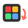

3×3×3·0 twists·par 1
Scramble
Undo it
This game needs 3D graphics
This browser or device has 3D graphics switched off. Try one of these instead:

Twist CubeWatch the twists, then undo them.
Scramble
Undo it
This browser or device has 3D graphics switched off. Try one of these instead:
R means a quarter turn of the right face clockwise, as if you were looking straight at that face. R′ (say "R prime") turns it anticlockwise, so R′ undoes R. Two of the same in a row, R R, is a half turn; you'll often see it written R2.
The letters go with your view. Turn the whole cube and the letters stay put: F is always the face towards you, whatever colour it is now.
The undo rule: to undo a run of twists, do them backwards and flip each one. R U F′ is undone by F U′ R′. It's like getting dressed: socks then shoes comes undone as shoes off, then socks.
U D L R F B twist a face; hold Shift for anticlockwise. The arrow keys turn the whole cube. Z or Backspace undoes a twist, 0 resets to the scramble, H or 💡 gives a hint, S or 📜 shows the scramble, and V or 🧭 goes back to the starting view. The hint knows the scramble, so it names the next twist back; if you've wandered off that path, it tells you how many twists to undo. "Shapes on stickers" in the level menu adds a shape to each colour, for anyone who finds some colours hard to tell apart. Nothing is saved: ticks for solved levels last only this visit.
Solving a full scramble from scratch takes a method. Most people learn one layer at a time: a cross on one face, its corners, then the middle layer, then the last layer. Take your time: there's no clock.
Reading and using a notation, and working backwards: undoing steps means reversing their order and flipping each one, the same idea as inverse operations in maths. It also builds 3D spatial reasoning, keeping track of the faces as the cube turns.